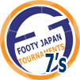

Final Group Stage see YCAC and BFC progress
 Sunday August 15th 2010 – YCAC.
Sunday August 15th 2010 – YCAC.
BFC scrambled their way past competitive opposition to top group C while YCAC strolled comfortably past their contemporaries in group D to both move into the semi finals.
Celts sparked off the evening with a 3 - 0 drubbing over FC Dinos on pitch B. The sizable squad aiding recovery on what was a very warm and humid evening. A far tighter match could be seen on pitch A as group seed BFC took on FC International with FC Int taking early control of the affair. more
FJ.
Summer 7's Start with a Bang - Literally
 Sunday August 1st 2010 – YCAC.
Sunday August 1st 2010 – YCAC.
It was Hibs and YCFC who battled humid conditions to wrap up their group qualifying in style to move onto the finals on August 22nd.
Baking conditions were pleasantly alleviated by a cooling bay breeze that couldn't have been timed better as 6 teams convened at YCAC for the first of 2 group stages yesterday evening.
The ever present and courageous boys from Shane FC braved the Hanabi packed trains on their mission from Saitama, as did the Tokyo based teams Hibs, Sarugaku FC and Swiss. more
FJ.
Hibs Win Third Straight TML Cup, Finish up the Double.
 YC&AC, June 6th, 2010.
YC&AC, June 6th, 2010.
Goals from Andre Pinto (2), Yohei Ohta and Tomomitsu Kunii secured a 4-1 victory for Tokyo Hibernian over arch rivals British FC and a league and cup double. It's also back to back FJ Cup titles for the Hibs who've been crowned league & Cup champions on 3 occasions now in the seven years since the start of TML. more
FJ.
Swiss Ground Jets 2nds to Win the FJ Plate
 Fukuda Denshi, May 22nd, 2010.
Fukuda Denshi, May 22nd, 2010.
It was a nice season for the Swiss: A sweet winning streak that brought promotion to Division 1, good performances in the New Year's and Charity 7's and a great turnout of players for the games. The plate would be the icing on the cake: Not the most prestigious title, but a title nonetheless.
The opposition in the final were the Jet 2nds, a team that is still in the run for promotion to the second division and looked like a stronger oppostion than their first team in the semi-final. more
PS.
Weeble Overcome! BFC Beat Sala to Reach Cup Final
Hachioji Park, May 8th, 2009.
BFC wobbled but they didn't fall down. A soft penalty perhaps evening out Sala's lucky equaliser, BFC ground out a 4-2 win to reach the Cup final which they will want to play on a grown-up's pitch this time please!
Little if anything can, or should, be noted about a first half which will be rued as 40 minutes (two hours if you include train into the country, changing, warm-up etc.) we will never get back. Both sides were very poor, let's leave it at that. more
AH.
Hibs See Off YCAC Threat.
YCAC, April 29, 2009.
No I am not mistaken and that is not the wrong date. That was the date when Hibs got smashed by YCAC on their pitch last year, my only loss to them during my four years wearing the green uniform and perhaps the most painful one of all. Unfortunately, I do not have a time machine like my friend Marty McFly "In Back to The Future," to go back in time and bring us back last year's title. So Hibs had to first face their ghosts from the past, then rebuild a better team and hopefully after all that get another shot at the title. more
AP.
Organizers See Red But Tournament Raises Over Half a Million.
 YC&AC, Monday 22nd March.
YC&AC, Monday 22nd March.
As dawn broke, memories of hail, wind, rain and solemn faces quickly disappeared from the minds of all 2009 Charity tournament veterans. Instead, the tingly sensation we felt as a child on birthday morn as the sun poked through our curtains – confirming our hopes for a bright and sunny day to host our back yard birthday party were re-ignited within all of this year’s Charity 7’s fully grown participants. It was going to be a party alright, a fun packed football frenzy in Yamate complete with thrills, spills, skills, goals and gaffs, not to mention a small dose of controversy plus a side sprinkle of tom foolery. All in the name of 2 worthy causes, this year’s tournament beneficiaries Refugees International Japan and for the second year running – Jeannine and Billy's Children's Foundation in Cambodia. more
FJ.
BFC Contain FCI in 6 Goal End to End Thriller
YC&AC, Sunday 28th March.
With 17 goals in their two previous meetings this quarter final meeting of FCI and BFC was always going to an exciting game. Unfortunately for FCI a late arrival meant they took to the pitch without a warm-up and for that they were punished. more
JM.
 YC&AC 'X', Champions of Charity.
YC&AC 'X', Champions of Charity.
YC&AC, Monday 22nd March.
Inspired by the boys of ’66, YC&AC ‘X’ were crowned 2010 Footy Japan Charity 7’s champions as Anthony Savage led his team to victory in a tournament which was quite simply a fantastic advert for the game.
Kitted out the same as Sir Alf’s world cup winners were 44 years ago, they managed to navigate their way through the group stages without too much fuss, two victories and a draw seeing them top the group and move safely through to the knockout stages. more
RP.
Sala Outgun Vagabonds in Cup Goal Fest
Fukuda Denshi, Sunday 17th January.
Who would have thought that such a motley crew of briggands, rapscallions and shysters (plus the Vagabonds) could have served up an 8 goal thriller? Not me, that's for sure. But lo and behold this cup classic ended 5-3 to Sala with the Vagabonds putting up a great fight.
2 goals from man of the match, Pete Swinney, and a goal each from Shige, Lenny and Ryotaro earned Sala their place in the last 16 of the cup.. more
ST.
BFC Hit YCAC 2nds with a Bunch of Five
YC&AC, Sunday 17th January.
Having walked away from YCAC with a deserved point against the first team last week, BFC went into this fixture expecting a win, and that despite around 10 players being unavailable or cup tied with Vags.. more
JM.
Panthers Throw Cup Game to Concentrate on League!
 Fukuda Denshi, Saturday 9th January.
Fukuda Denshi, Saturday 9th January.
…......but seriously,
This was a game we were all looking forward to. A real test to see how far we've come and, if we can secure promotion, how we might fair next year alongside the big boys. Yeah, big boys. That was the first thing that struck me on arriving at Fukuda Denshi to see the opposition warming up. I don't know if it's the Celtic hoops that just make players look bigger, or what. Still, not to be out-done in the pre-match psychological warfare, we changed into a fetching little pink number, which must have struck fear into the hearts of the Celts players. Errr, remind me again, who's idea was the pink kit?. more
AV.
Jorge Runs Off with Cup (Literally).
 Footy Japan New Year Soccer 7's, 2010.
Footy Japan New Year Soccer 7's, 2010.
Oi Futo Dai Ni, Oi Chou Rinkai Koen.
Sunday, January 3rd, 2010.
FC International's El Capitano, Jorge Kuriyama, seen here holding the cup, scored twice in the final vs YC&AC to give his team their first FJ 7's tournament win.
Sala FC defeated the Swiss Kickers to take the plate trophy while last years champions NSP were knocked out on penalties very early on.
Three teams had to be turned away in the week leading up to the tournament as a full complement of 16 teams turned out on a beautiful, sunny January morning to do battle in Footy Japan's latest 7 a side tournament, showing how popular these events are becoming. more
FJ.
FJ Retain Masters Crown While BFC Take Open.
28th/29th November, Phuket, Thailand
We came, We saw, We conquered!
 Yes, he did it again, Sid managed to 'Make friends and influence people' with another of his infamous speeches - speaking without thinking as usual. He didn't apply his brain to this one, as if there could have been anything left of his brain at that stage of the evening, Brian Doyle's Stag night well underway and pints of cider already in his belly. more
Yes, he did it again, Sid managed to 'Make friends and influence people' with another of his infamous speeches - speaking without thinking as usual. He didn't apply his brain to this one, as if there could have been anything left of his brain at that stage of the evening, Brian Doyle's Stag night well underway and pints of cider already in his belly. more
FJ.
YC&AC Stagger Past Embassy
YC&AC, Sunday 22nd November.
YC&AC 1st team took a 2-0 victory over British Embassy FC en route to second round in the 09-10 FJ Cup on Sunday afternoon.
YC&AC played groggy throughout the game, but managed to get up 1-0 after 20 minutes when linkman Tim Miller headed a beautiful cross from Satoshi Mitsuda, and 2-0 after an individual effort inside the box by Shigehiro Yamazaki in the 25th minute.
BEFC came out aggressively in the 2nd half through the build up of Takanori Nakayama but lack of precision in the final third left them away of reach from a goal in the YC&AC net. YC&AC will host the Saitama Jets next
JT.
Clash Pants in Pinball Play but Penalty Princes
Nagahama Koen, Sunday 15th November.
After a not exactly boring or lackluster game but one with not so much attacking quality Clash managed a 0-0 draw with Shane in normal time and then got into the next round of the cup with a faultless 3-1 penalty performance after keeper Kevin Green’s vital save and three well struck spot kicks. more...
CA.
Cup to Kick Off Nov 7th
Tokyo, Tuesday 20th October.
The first round of this years FJ Cup will kick off on the weekend of November 7th/8th. This time around 30 teams will vie for Tokyos biggest international knockout cup. Due to the upcoming shortage of ground availability however, we are still evaluating whether a plate tournament will be feasible this year or not. Cup draw...
FJ.
New Years Sevens Date Set
OiFuto, .
2010 New Year 7's tournament has been booked for Sunday Jan 3rd. We are now accepting team entries until Nov 30th (or until full) Details: click here...
FJ.
YCAC Clinch Mag 7's at Last Gasp
 YC&AC, Sunday 23rd August.
YC&AC, Sunday 23rd August.
YCAC left it til the last 5 minutes to grab the honors in the inaugural Magnificent 7's. BFC looked set to take the title as they screamed to a 5-1 lead against Shane FC while YCAC were still at 0-0 with Hibs. A last minute capitulation by Hibs, meant YCAC's 4-0 victory turned the tables and despite BFC winning 7-2, they still lost the league, YCAC having a 1 goal better Goal difference. For all the Mag 7's results & league tables click here...
FJ.
By George, Culture Club Clinch Summer 7's
 OiFuto, Sunday 16th August.
OiFuto, Sunday 16th August.
On one of the hottest days of the year, 20 teams fought it our on the astroturf at OiFuto for the honour of becoming champions of Footy Japan's Summer 7's.
None of the previous 7's winners could even make it through to the final as the Yokohama Soccer & Culture Club beat FC Bon Bon on Penalties to become new champions. In the Bowl, TML's El Diego beat the British Embass. click here...
FJ.
BFC Off to Flyer in Mag 7's
 YC&AC, Sunday 21st June.
YC&AC, Sunday 21st June.
BFC started the New Magnificent 7's Summer League in Grand style, punishing Panthers and Zion with resounding 6-0 & 7-1 defeats respectively, while their 'partners' Shane FC scraped a 3-2 victory over Zion but lost 2-0 to Panthers. This was still a great acheivement for the Shane Players who'd run a half marathon for charity that very same morning - kudos to the Shane boys. For all the Mag 7's results & league tables click here...
FJ.